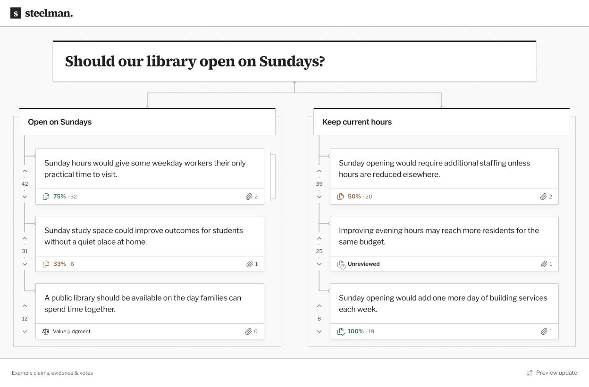

Kieran LaMee · Pod 6 · Building with AI
Find the strongest argument.
Together.
An intuitive way to collaborate on a topic.
Build on each other’s ideas and make the strongest case.

The idea
PRD v1- First users
- Pod 6 classmates discussing a decision together; reachable for a first test.
- Before
- Arguments and sources scattered across a chat. Good ideas get repeated or buried.
- After
- One shared view of the strongest case for each option, improved together.
- Core workflow
- Choose an idea, compare its wordings, inspect the evidence, and suggest a stronger version.
- Three non-goals
- A social feed.
- Reputation scores or rewards.
- AI deciding what is true.
Build log
November 5–6, 2026- Built
- Working card comparisons, evidence views, voting, and suggested versions.
- Learned
- The exported prototype saves changes in the browser, including after a refresh.
- Changed
- Narrowed the PRD to one workflow. Simplified this page to match the diagram.
- Limits
- Sample data; changes stay in one browser. Shared collaboration and user testing are next.
- Time
- About 4–5 hours before page setup. Setup time not yet tallied.
- Cost
- Existing ChatGPT Pro subscription; no extra API or hosting spend reported.